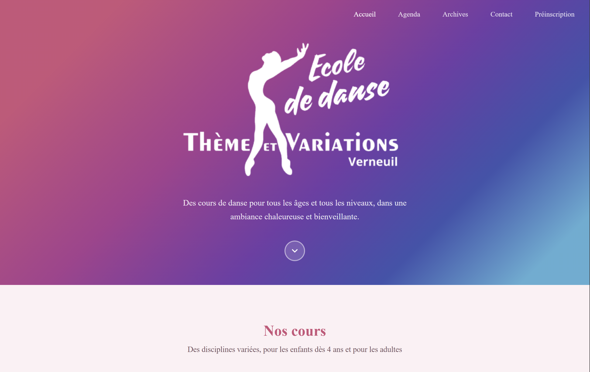
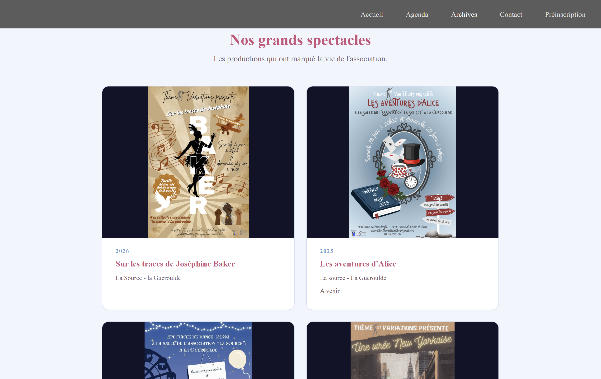
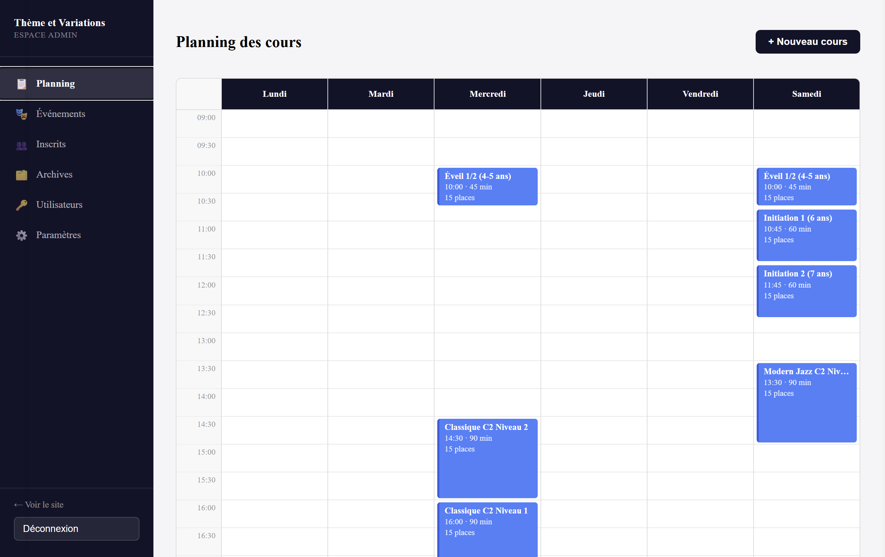
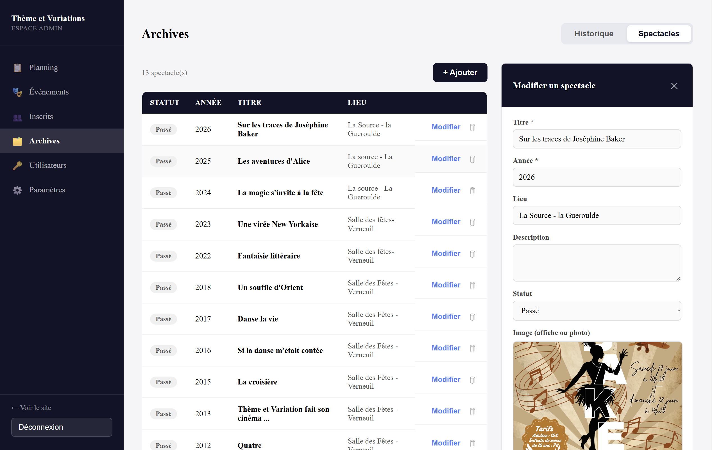

01
Thème et Variations — site d'une école de danse
Application web full-stack de gestion pour une école de danse : inscriptions aux cours, planning hebdomadaire et gestion des comptes familles. Projet personnel conçu, développé et déployé en production de A à Z, avec comptes parents multi-élèves, limite de 15 places par cours et liste d'attente automatique, gestion des exceptions d'agenda (vacances, annulations, événements) et authentification sécurisée par JWT.



